11月06日STl图纸文件分享
7z02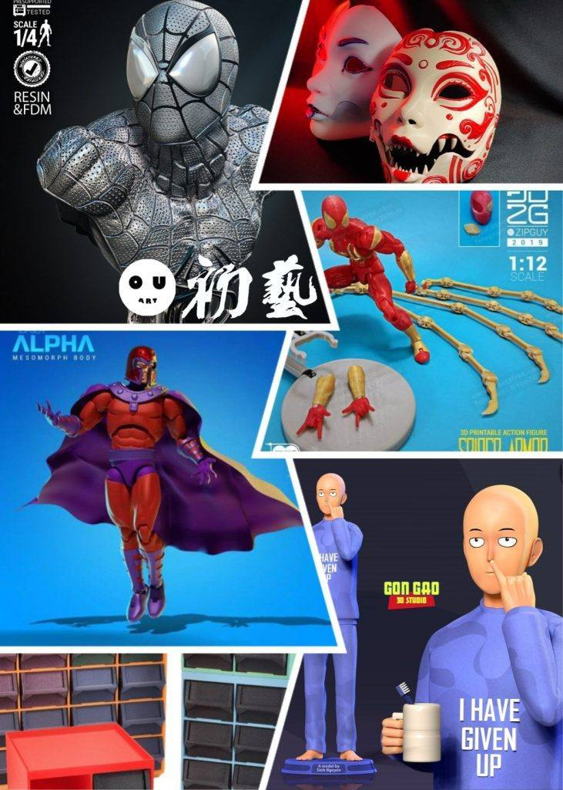
1.蜘蛛侠胸像，WICKED出品，质量很高。
链接：https://pan.baidu.com/s/1bwGna2-e4im8lrZlKkmtyQ
提取码：7z02
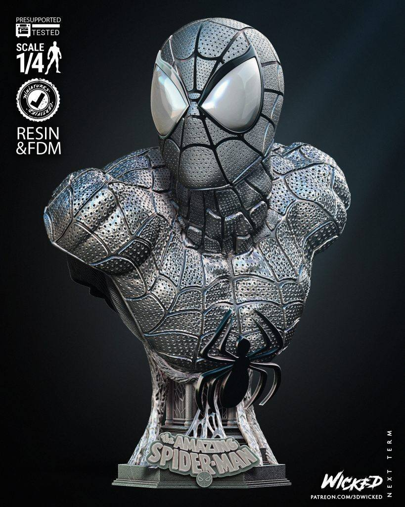
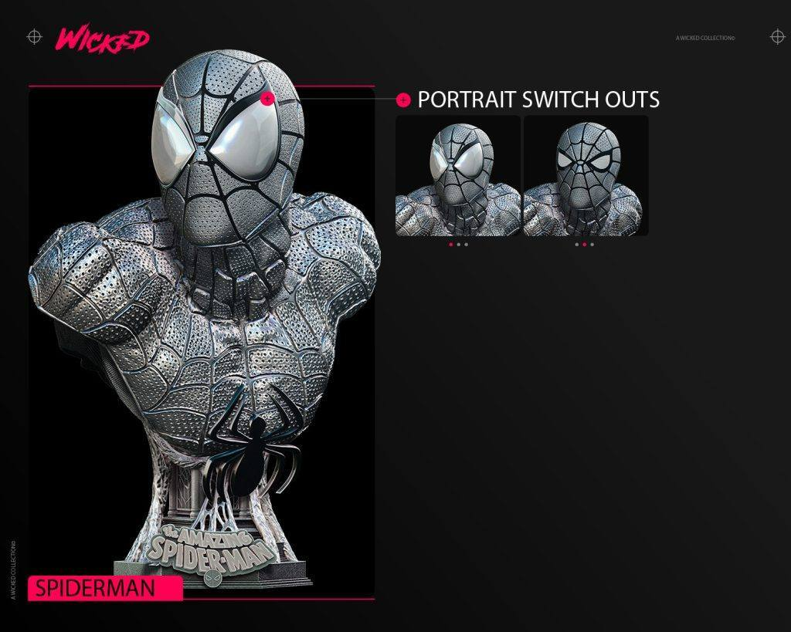
2.蜘蛛侠可动，分件细致，fdm可打，3dzipguy出品。
链接：https://pan.baidu.com/s/1OTJDVLAVlAUtUtDm1aE47g
提取码：1lr8
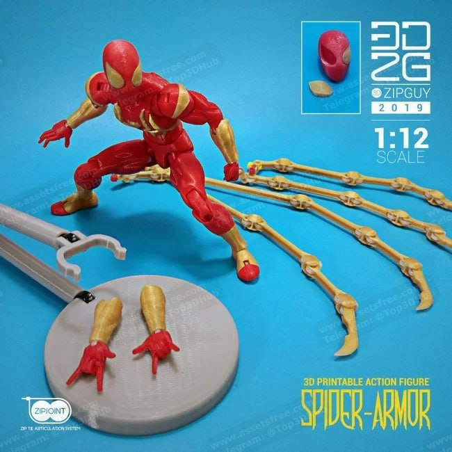
3.可动面具，可穿戴可动，PipeCox出品，特别的审美风格。
链接：https://pan.baidu.com/s/1K0kWLbpY8J1YR5BYvard8Q
提取码：v09t
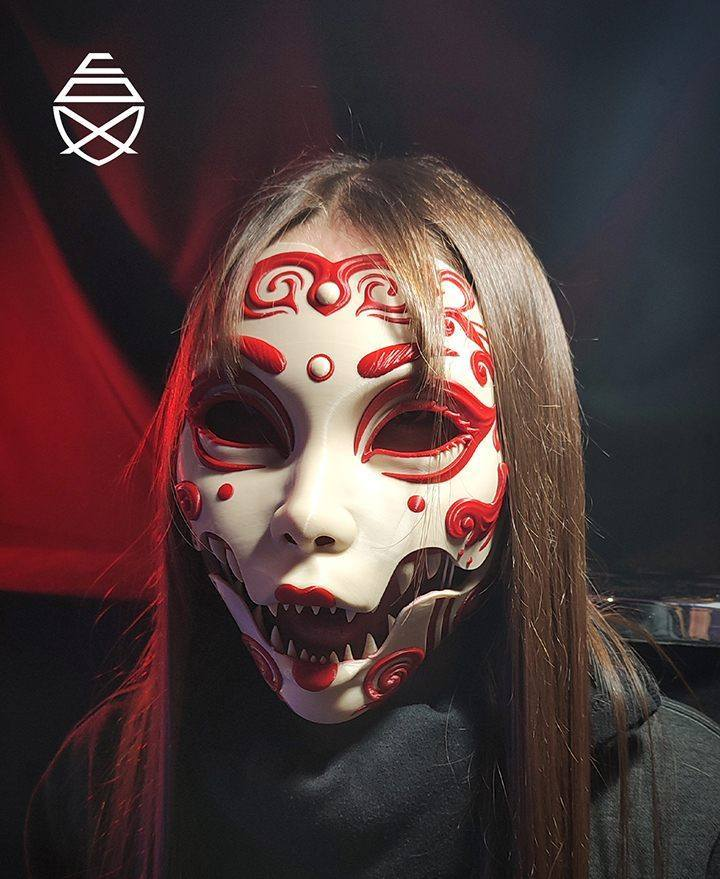
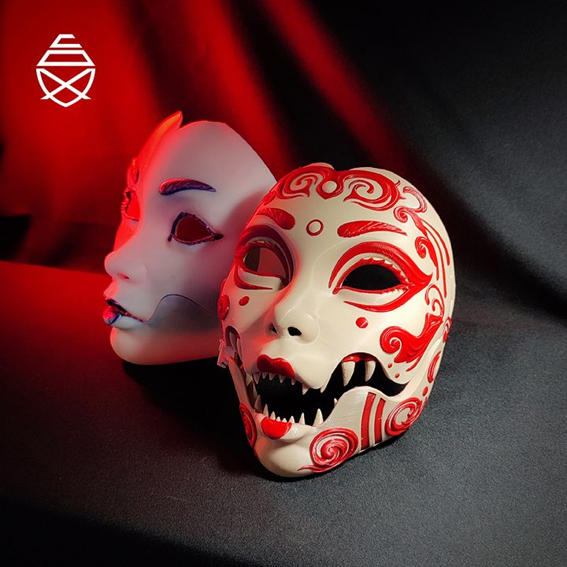
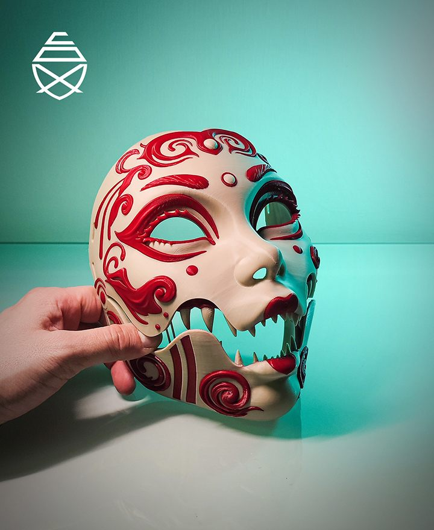
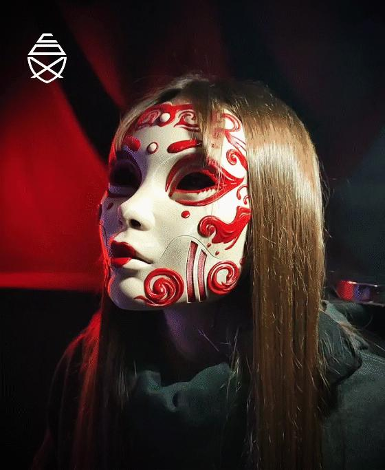
4.万磁王可动，斗篷需要研究一下，模型细致，依然3dzipguy出品。
链接：https://pan.baidu.com/s/1Te3cNTRMf8l8YA7VCGSgmQ
提取码：sl7p
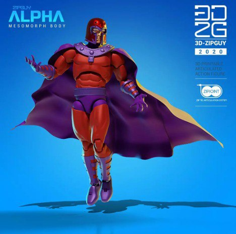

5.收纳箱，之前群友求过，颜料收纳还没有合适的，这个工具收纳箱子也不错，适合fdm打一打。
链接：https://pan.baidu.com/s/1DUcTcGwODpvUHpBytAVMuA
提取码：g07r
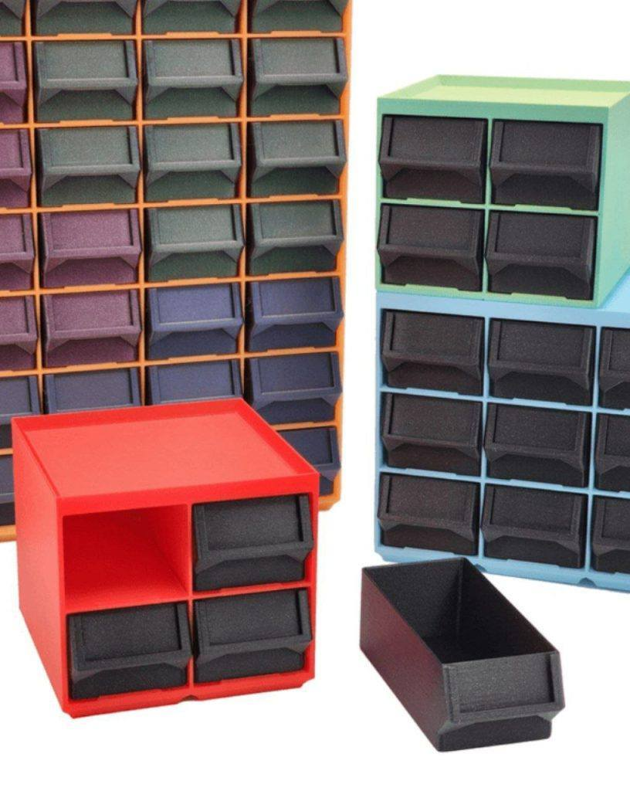
6.埼玉老师，有趣的造型，衣服上写着“我已经放弃了”光固化打一个摆着会很好玩，脸做的很像。
链接：https://pan.baidu.com/s/11w9q45CC1DtMwZjghTESvg
提取码：rc2n

追加一个群友求的穿靴子的猫
链接：https://pan.baidu.com/s/1r3CNQbPYfrAsRUVItvQv6Q
提取码：efn2
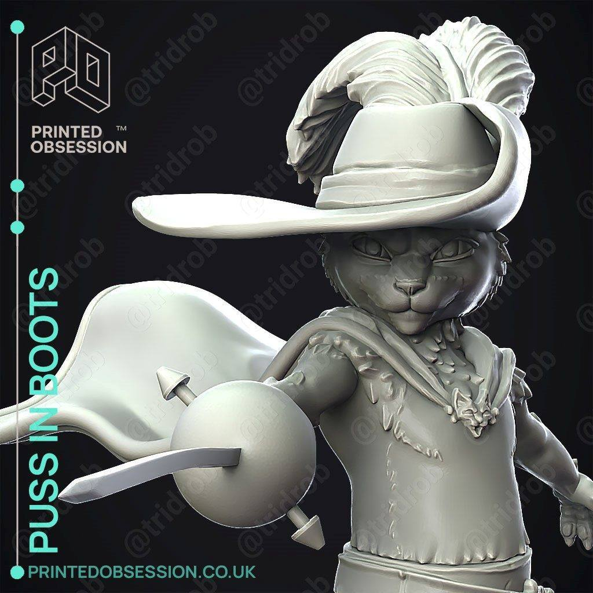

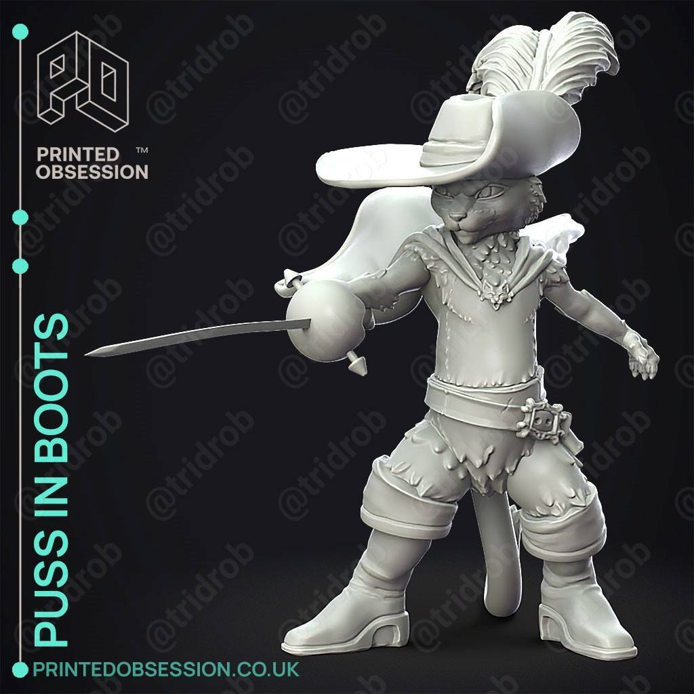

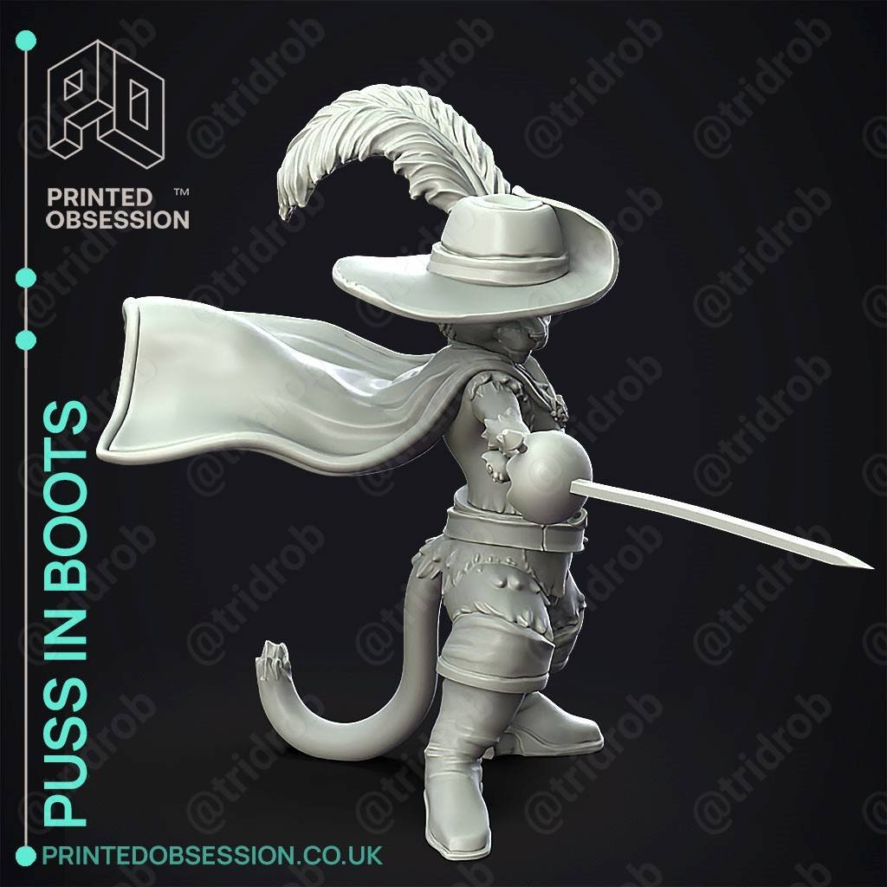
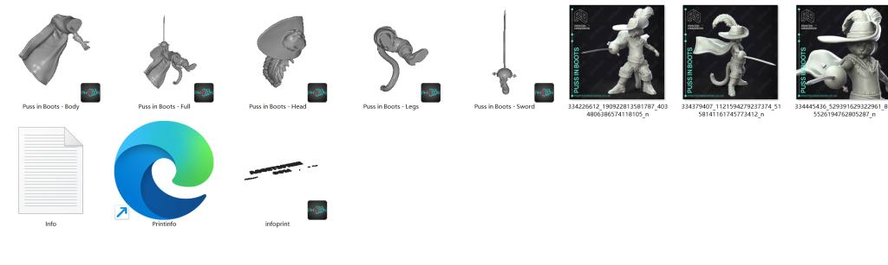
以上内容仅供个人使用（非商用）
ONLY for PERSONAL (NON-COMMERCIAL) use.
加群获得更多免费模型！